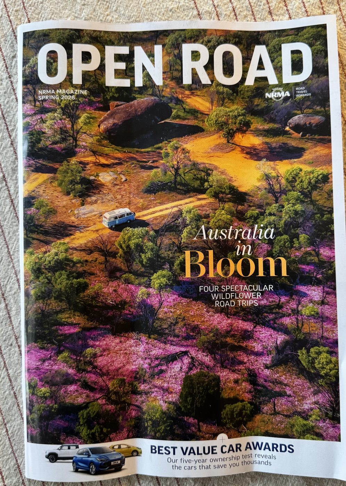
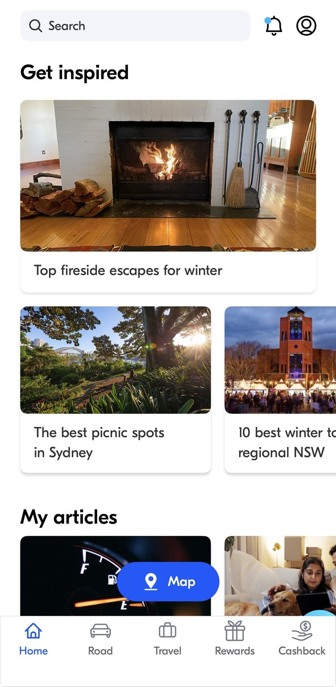

A digital version of the same content costs a fraction of what it costs to print and mail. NRMA's Open Road has run as a printed, quarterly magazine since 1927, and it still reaches more than 1.3 million Australians an issue. In 2025 the company built a digital content hub to sit alongside it. It didn't replace the print run.
That's the actual puzzle. If digital were simply better, cheaper would have won by now. Three separate strands of research point at what a printed copy is doing that a screen can't: touch changes how much people feel something belongs to them, paper measurably changes how well people process what they read, and being physical changes how much people value a thing, independent of what it says.
None of this makes a digital newsletter a mistake. It means the choice between the two is often made on production cost alone, when the research says it's really a choice about attention, memory, and how much value someone assigns to what they've been given.
The story in four parts
NRMA prints and posts Open Road every quarter, and built a digital hub alongside it rather than instead of it.
Peck & Shu (2009): people who touched an object, even briefly, felt more ownership over it, and paid more for it.
Mangen et al. (2013): students who read the same text on paper scored higher on comprehension than students reading it on screen.
Atasoy & Morewedge (2018): identical content was valued and paid for more when it arrived as a physical object.
The evidence at a glance
NRMA still mails Open Road to more than 1.3 million Australians an issue, and its 2025 digital hub launched alongside the print run, not instead of it.
Across four separate studies, briefly touching an object, or just imagining touching it, made people feel more ownership and pay more for it.
72 tenth-graders scored significantly higher reading the same text on paper than reading an identical PDF on screen.
Across five separate experiments, people paid more for a physical version of identical content than for the digital one.
The clearest live example of this tension is sitting in Australian letterboxes right now.
Why keep printing and posting something that could be sent for almost nothing?
Open Road is NRMA's quarterly member magazine, covering car reviews, road trips, and motoring advice. It has run continuously since 1927, and still reaches more than 1.3 million Australians an issue. NRMA prints and mails it four times a year, a real cost that scales with membership size.
In early 2025, NRMA launched a digital content hub alongside Open Road: a website and app section with daily updates, video, and a trip planner, available at close to zero marginal cost per reader. The quarterly print run kept running anyway, unchanged.
What this shows: an organisation with a genuine, ongoing incentive to cut a real printing and postage bill chose to keep paying it. NRMA hasn't published its own reasoning for that choice. What follows is the behavioural evidence for why a physical copy can outperform a digital one, not a claim about what NRMA itself decided.
The claim above holds up outside NRMA's own press release. A physical copy of the Spring 2026 issue turned up in a real letterbox, and the digital hub launched alongside it is a real, working app tab today.

NRMA, Open Road magazine, Spring 2026 issue: cover story “Australia in Bloom: Four Spectacular Wildflower Road Trips,” plus a “Best Value Car Awards” sidebar. Photographed August 2026.

NRMA app, home tab: the “Get inspired” article feed and “My articles” reading list, the digital content hub referenced above. Captured August 2026.
A dated copy on paper and a live screen of the digital hub confirm both formats are still running side by side, well over a year after NRMA's 2025 launch announcement. Neither one measures whether the print edition works better than the digital one. That's what the cited studies above, and the linked experiment below, actually test.
This site's Endowment Effect entry covers what happens once someone already owns something: they value it more than they would if they were buying it fresh. Joann Peck and Suzanne Shu's research asks an earlier question: how little contact does it take to trigger that same feeling, before any actual ownership exists?
A magazine that gets picked up, flipped through, and put down again isn't just triggering touch. It's also being read on paper rather than a screen, and that swap changes comprehension on its own.
The furthest-reaching of the three findings doesn't need touch or reading at all. It's about what happens to the value of identical content once it stops being a physical object.
None of these three studies tested a real, recurring member magazine. Peck and Shu tested touch on everyday consumer objects. Mangen tested school reading comprehension. Atasoy and Morewedge tested valuation of digital vs. physical photos, books, and films. This report combines three separate, real findings to explain why a physical copy might outperform a digital one for something like Open Road. Whether it actually does is the open, testable question, and it's exactly what the linked experiment below proposes to test.
The three studies above explain why a printed magazine gets touched, read, and kept. A newer study, from two of the same researchers behind the touch-and-ownership finding, tests what that translates to commercially: whether a stronger feeling of ownership over something tangible actually changes whether a customer stays.
Open Road is a tangible object a member can hold, not a service outcome they rate. If this mechanism generalises past hotel rooms, mailing a physical magazine four times a year is a recurring, low-cost touchpoint that reinforces felt ownership independent of whatever a member thinks of their last roadside call-out. That's a loyalty lever satisfaction scores alone would miss entirely.
The acquisition side of this argument is less directly tested. Peck and Shu's willingness-to-pay finding and Atasoy and Morewedge's valuation gap both point the same way: a physical welcome pack or membership card should make a stronger first impression, and support a higher perceived value, than a digital-only equivalent. None of the three studies on this page tested that moment of signup itself, so treat this as a reasoned extension of proven mechanisms, not a fourth verified finding.
The mechanism behind a physical copy's edge is one this site already covers from the ownership side.